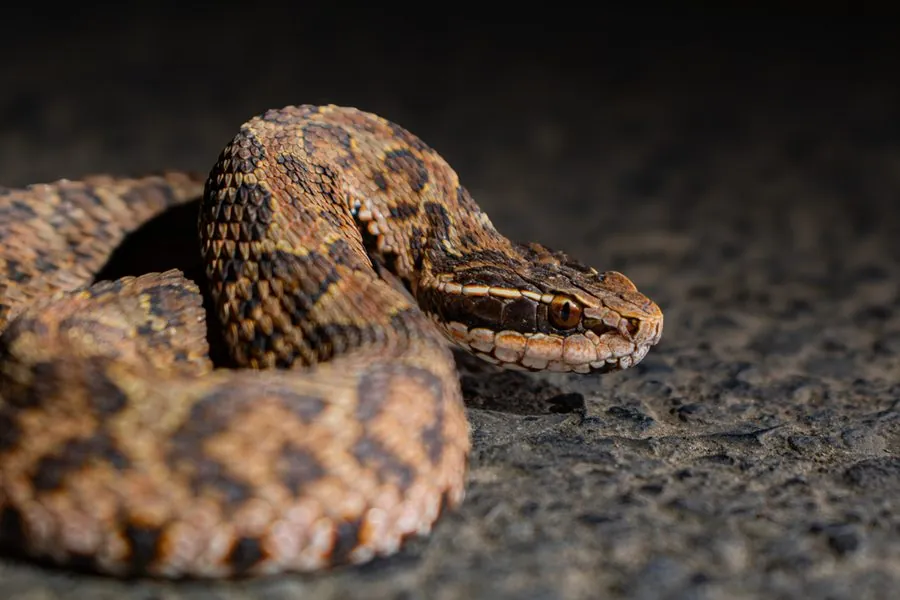

爬行动物 · 动物界
短尾蝮 Gloydius brevicaudus

中国东部常见的毒蛇，身体短粗、尾短，头部三角形，多在晨昏活动，被咬后会肿胀疼痛，须立即就医。
- 分类
- 门脊索动物门纲爬行纲目有鳞目科蝰科属亚洲蝮属
- 栖息环境
- 农田、草地、灌丛、石堆、田埂与村舍附近
- 地理分布
- 中国东部、中部和北部的大部分地区
- 保护级别
- IUCN 无危（LC）；中国未列入国家重点保护名录
物种志
短尾蝮体长 50–70 厘米，身体短粗，头部呈三角形，与颈部区分明显，吻端略尖，眼后有深色条纹；体色多为灰褐、黄褐或暗褐色，背部有两行深褐色圆斑，斑纹交错排列，腹部灰白并带斑点；尾短而细，“短尾蝮”之名由此而来。
它分布于中国东部、中部和北部，栖息于农田、草地、灌丛、石堆和村舍附近，多在晨昏活动，捕食鼠类、蛙类、蜥蜴和昆虫。它是卵胎生蛇类，雌蛇妊娠约 4–5 个月后产下 10–20 条幼蛇。短尾蝮毒性较强，被咬后局部会迅速肿胀、疼痛，可能出现皮下出血，须立即就医；它在农田中捕食鼠类，对控制鼠害有一定益处，野外遇到时不要徒手抓捕。
形态与习性
- 食性鼠类、蛙类、蜥蜴和昆虫
- 体长50–70 cm
- 寿命约 10–15 年
- 繁殖卵胎生，妊娠 4–5 个月，每胎 10–20 条
- 活动节律晨昏活动，白天多隐蔽休息
- 毒性毒性较强，被咬后肿胀疼痛，须立即就医
趣味知识
- 短尾蝮身体短粗、尾巴很短，头部呈明显的三角形。
- 它是卵胎生蛇类，雌蛇直接产下活的幼蛇。
- 短尾蝮在农田中捕食鼠类，对控制鼠害有一定帮助。
生态关系
- 捕食 → 泽蛙 蝮蛇捕食蛙与鼠